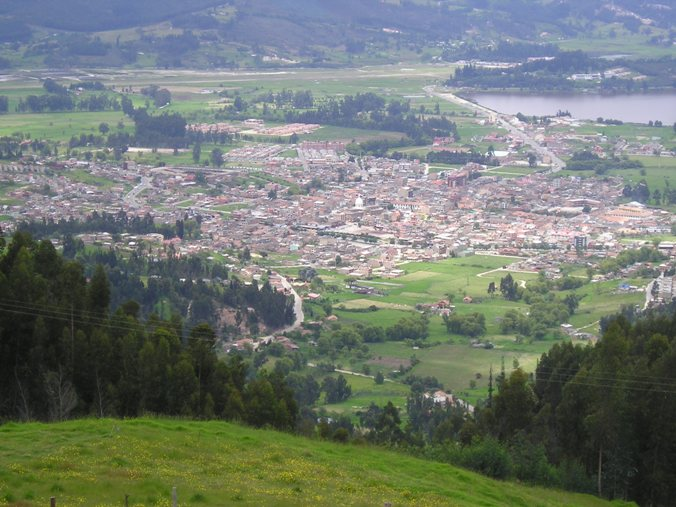

Desarrollado por
Juan Camilo Acosta

 Paipa es considerado la capital turística de Boyacá por su gran variedad de lugares por visitar como el Lago de Sochagota o la Casona del Salitre, entre otros. Además de ello, ofrece gran variedad en gastronomía reflejando las costumbres culinarias cundiboyacenses. Además de ser un referente histórico donde sucedieron hechos fundamentales para Colombia como la batalla del Pantano de Vargas en 1819. Paipa es un gran lugar para poder descansar, relajarse, interactuar con la cultura campesina, saber un poco más de historia nacional mediante sus bellos paisajes y monumentos y poder darse un respiro de la vida de ciudad.